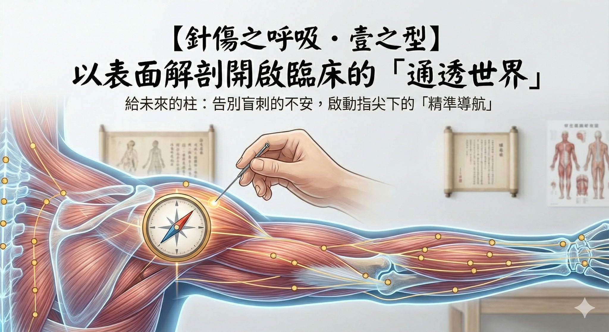

針傷之呼吸・壹之型：以表面解剖開啟臨床的「通透世界」
【 針傷之呼吸・壹之型：以表面解剖開啟臨床的「通透世界」 】
（身為鬼滅迷，終於有機會用上這個中二梗了 :P）
今年三月，接下了一個很有重量的任務。
感謝長庚中醫系 林程瑜部長的熱情邀請，讓我能在【2026 丙午針灸研習營】中，為在學學弟妹們帶來一場關於「表面解剖」的實作演講。
接下任務後思考許久，決定講這個主題，不僅是教學，更是對自己臨床之路的一次總複習。
-
📍 告別「盲刺」的迷惘
回想當年初入臨床，雖然背著滾瓜爛熟的穴位歌訣，但當針尖抵住皮膚的那一刻，內心深處總有一絲揮之不去的不安……
「這底下是筋膜還是神經？」
「這樣的深度安全嗎？」
「所謂的氣感，究竟是得氣還是刺中血管？」
若心中沒有精準的解剖地圖，每一次下針，都像是在迷霧中航行。
-
🔍 中醫的手，解剖的眼
身為中醫師，我們每天都在「揣穴」。隨著臨床經驗的累積，我才漸漸體會到：古人的「揣穴」智慧，與現代醫學的「表面解剖觸診」絕對有高度相關。
這次分享，我想將現代解剖學中關於肌肉起止點、骨骼位置觸摸、相關神經走向等的理解，轉化為針灸時的「內建導航」。
這是我給學弟妹的禮物，也是給當年的自己，一個明確的回應。
-
✨ 給未來的「柱」們
希望未來的醫師們，能透過這次實作，早一步開啟臨床的「通透世界」。
讓我們在下針前，指尖下的皮下世界變成立體的、透明的。讓針灸不再只是「憑感覺」，而是紮實的「憑依據」。
-
醫學的進步，來自新舊知識的碰撞。
當我們能透視皮下的千溝萬壑，古老的針傷醫學就不再只是口耳相傳的經驗，而是指尖下最溫暖且精準的科學。手中握有導航系統，就可以盡情探索世界了！
-
三月，讓我們一起練習這套「精準導航」的呼吸法。
ps.配合主辦單位活動宗旨，僅限中醫系學生報名喔！
#針灸研習營 #表面解剖 #中醫針傷 #解剖觸診 #通透世界 #精準醫療 #教學相長
